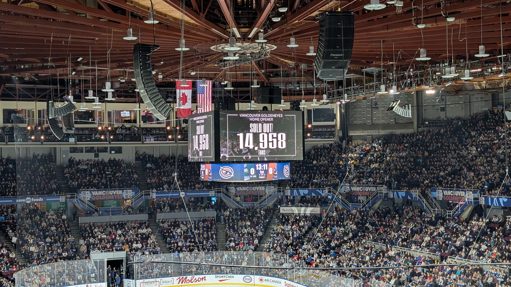

On a wet and chilly Friday night, the Seattle Torrent met the Vancouver Goldeneyes at the historic Pacific Coliseum in Vancouver for both club’s first ever regular season PWHL game. Among the crowd were several hundred Torrent fans who made the trip over the boarder for the game - including over 100 folks who packed a bus organized by Women’s Pro Hockey Seattle. I was not on the bus for logistical reason, but we made the trip to witness history in person.
The game was as to be expected between these two stacked rosters. There were chances at both ends, solid defense, fantastic goal tending in a fast and physical game that went down to the wire and into overtime before former Montreal Victoire forward, Abby Boreen, dribbled a puck through Corinee Schroeder for a Vancouver win.
First Impressions
This was my first time inside Pacific Coliseum. As a former Canucks fan (in the pre-Kraken days), I am certainly aware of the history of the building and I was very excited to finally see a game there. A lot has been said about the Goldeneyes being the only PWHL team with their own rink - including the highly entertaining Primary Tenant Pod - and I had heard rave reviews from the Jock’s In Jills crew about the recent transformation of the facility. Even knowing all of that before we arrived, it was still incredible to see a building dedicated to women’s professional hockey. The Goldeneye brand is EVERYWHERE - including, of course, at center ice. Is it a 57 year old building? Yes, yes it is. But is also incredibly well maintained and primed to host PWHL hockey for many more seasons. As someone who was there when Megan Rapinoe and the Reign were playing at Memorial Stadium at Seattle Center - I can tell you, this is certainly not that.
The game presentation was well done, just the right amount of pomp and circumstance without overshadowing the game to be played. Before the player introductions for Vancouver, there was also a nice video tribute to the legacy of the Coliseum.
A lot has been said during the off season about how the league handled the first expansion, with many fans and commentators upset about the very favorable conditions for the new teams. As a fan of one of the expansion teams, I am not super worried about these comments (please don’t ask about the next expansion) but it is hard to imagine a better start for two franchises than the group of players that took the ice in Vancouver. Both teams are stacked with NCAA stars, established PWHL performers, and Olympic champions. From top to bottom, it isn’t a stretch to consider these two of the best teams in the league already. And from a league perspective, it makes sense. Coming to the west coast in year three is a huge jump, and there is certainly incentive to make sure these new teams get off to good starts. I personally think the fan bases are smart and enthusiastic enough to support even mediocre teams out of the gate, but nothing pulls in casual fans like name brand players that are winning games - and Seattle and Vancouver should have exactly that!
Even with all the talent these teams have, they are still new teams coming together to start a season after less than 2 weeks of training camp to get to know each other. And, since their two preseason games were behind closed doors, this was our first chance to see them in action. I was certainly curious to see how coach Steve O’Rourke would align this team in their inaugural game against a team that is destined to be their biggest rival. Thanks to the Circling Seattle Sports team for this fantastic graphic for our first ever lineup.
Show code
knitr::include_graphics("images/css_lineup.jpg")
Lineup via Circling Seattle Sports (@circlingseasports.bsky.social)
Forwards
As the roster was being finalized earlier in the year, I think everyone had penciled in a starting line of Jessie Eldridge, Alex Carpenter, and Hilary Knight leading Seattle but I really like this look of balancing speed and power across both top lines. As a huge Hannah Bilka fan, I think pairing her speed and agility with a power forward like Eldridge makes a ton of sense - and Gosling with Carpenter and Knight is still scary enough to cause the rest of the league some sleepless nights.
I also love this third line combination of Lexie Adzija, Mikyla Grant-Mentis (Buckey), and Natalie Snodgrass - this is a high energy, high compete third line that can shut down an opponent’s top line and provide some secondary scoring along the way. The fourth line of Marah Wager, Jenna Buglioni and Brook Bryant has such a high ceiling. This is a true west coast line too, with Bryant from California, Buglioni from BC, and Seattle native Marah Wagner. I fully expect Buglioni to be competing for top 6 minutes once she adjusts to the PWHL pace and Wagner will bring a ton of speed and grit to this team.
Watching the game live, I was surprised at how much O’Rourke relied on the third line. It felt like every other shift, they were coming over the boards for Seattle. This was probably boosted a bit with all three players getting PK time, but looking at the ice times afterwards, it was a pretty even split between the top three lines.
Show code
# TOI plot sea_box %>%filter(pos %in%c("C", "RW", "LW")) %>%ggplot(aes(x =reorder(name, on_ice_min), y = on_ice_min)) +geom_col(fill ="#6098AE") +coord_flip() +labs(title ="Torrent Ice Time",subtitle ="Forwards",x ="", y ="") +theme_classic() +theme( plot.title =element_text(color ="#074F51", size =16, face ="bold") )
As for the fourth line, it probably isn’t surprising to see the low numbers in the first game. This was a game on the road, against a top tier opponent, that was tight from start to end. As the season progresses, I am curious to see if this balances out more or if O’Rourke continues to roll those top 3 heavily.
Defense
I really like the mix of defenders assembled by GM Meghan Turner. There is a nice mix of stay at home and push the offense in that group and the three pairs slotted in for the first game is a great reflection of that strategy. Cayla Barnes is already an esstablished stud in this league and will push offense from the back end while Anna Wilgren can hold things down defensively. Aneta Tejralová has an extensive international career and has been one of the most dynamic defenders in the PWHL since year 1, while Emily Brown brings signature toughness shown in two years with the Boston Fleet. The third pair of Megan Carter and Mariah Keopple is well balanced and more than capable of going toe to toe with the best forwards in the PWHL.
Unfortunatly, Tejralová left the left the game halfway through the second period after an awkward hit into the boards from fellow Team Czechia skater, Tereza Vanišová. The play was reviewed for a major penalty but ultimately, no call was made. This left Seattle rolling 5 defenders for the second half of the game and Cayla Barnes seems to have picked up most of the extra ice time - although she should be expected to lead the team in TOI for most of the season in any case.
These are words we’ve heard used to describe how the Torrent want to play, and I think all three were on display in the first game. Throughout the night, the Goldeneyes seemed surprised by the physicality of the Torrent. Wilgren and Buglioni each took a penalty in first seven minutes of the game, but Torrent PK held strong in front of starting goaltender Corine Schroeder to kill of both opportunities. Then the line of Gosling, Carpenter, and Knight got to work on hard working shift in the offensive zone that resulted in Julia Gosling shoving a third chance puck under Emerance Maschmeyer for the first ever Torrent goal at 14:40 of the period. After the goal, Vancouver made a big push for an equalizer and the aggressive Seattle forecheck lead to a couple of great looks for Goldeneye forwards on the rush, including when Sarah Nurse scored on a perfectly executed 2 on 1 at 17:41. Luckily, Hilary Knight and Julia Gosling were not going to let the period end in a tie. Knight makes a perfect angle along the boards as Vancouver tries to exit the zone, makes a nice touch pass to Gosling, and she rips a shot shortside high over Maschmeyer from the top of the circle to give Seattle the lead. I loved this goal so much that I designed an entire drill for my 14U team around it!
The teams would battle throughout a scoreless 2nd period before Gabby Rosenthal scored 59 seconds into the third period to make it 2-2. Seattle would go ahead at 13:47 when Hannah Bilka jammed home a lose puck from the side of the net (it would take a video review) to give Seattle the lead again. But Vancouver would tie it up at 17:57 of the third in a 6 on 5 situation and then Abby Boreen would seal the victory 1:36 into the overtime period off a fantastic play from Vanišová - a picture perfect outcome for home fans and (probably) the PWHL as Vancouver takes the extra point between the two expansion clubs.
Digging In
Show code
knitr::include_graphics("images/attendance.jpg")

Lineup via Circling Seattle Sports (@circlingseasports.bsky.social)
All in all, it was a fantastic night of hockey in Vancouver. The hockey was fast paced and competitive, the crowd was buzzing and everyone went home (mostly) happy. For the first game out, I was really encouraged by what I saw from the Torrent. The offensive power showed well, there were opportunities to score, long stretches of possession and some surprising chemistry between new teammates. There were also some rough spots. More than a few times, the defense was exposed by a stretch pass through the neutral zone - Sarah Nurse had several great looks on Schroeder with speed from these. There were also a lot broken breakouts and turnovers near both blue lines, including on the game winning goal in OT. But you can see the promise of this team. Even on the road, against a top quality opponent, they were a broken play and partial save away from taking all 3 points and squeaker of a goal from extending OT. There is a lot to be happy about as a Torrent fan.
Looking into the data I could coax out of the hockeytech API, I wanted to see how the offenses from these two teams stacked up. I haven’t found a publicly available xG model for the PWHL, but the official game recap does provide individual shot information, including shot quality (either quality or not). This gives us a better sense of how each team attacked during the game.
While each team registered 27 shots on goal, the Torrent out paced Vancouver 13-10 in quality shots (excluding goals), while each team got 2 goals on quality shots. The two “non quality” goals against decided the game in the game tying goal from Claire Thompson and Boreen’s winner. Those are tough to give up but they can also be fixed, so not something to worry about right now.
Expanding this to individuals on the ice, you can see who was driving each team’s attack.
For Seattle, there is no surprise seeing Julia Gosling pop in this chart.
She got both of Seattle’s first period goals. The first was a gritty play in front of the net, the second was a snipe from the top of the circle but she brought offensive pressure all night with her line. The third line also shows up well here. Yes, they had fewer quality shots but they were keeping Vancouver hemmed in their zone and kept pressure on Maschmeyer throughout the night. I am surprised to not see Cayla Barns with a shot but I don’t expect that to happen too often for Seattle, hopefully a few more powerplay opportunities will open that door.
For Vancouver, it was the Abby Boreen and Sarah Nurse show.
Show code
player_shots %>%filter(player.team_code =="VAN") %>%ggplot(aes(x=player.last_name, y = total_shots, fill = shot_quality_description)) +geom_bar(stat ="identity") +scale_fill_brewer(palette ="BrBG")+labs(title ="Shot Quality by Goldeneye Player",x ="",y ="",fill ="Shot Quality") +theme_minimal()+theme(axis.text.x =element_text(angle =45, hjust =1))
The pair combined for 12 of Vancouver’s 27 shots and 2 of their 4 goals on the night. Sophie Jaques also added 4 shots from the blueline.
The other striking part of the game, was the difference in the physicality of the game. In the days since, many casual or first time PWHL views have commented to me about how surprised they were at the amount of hits in the game. Regular watchers of the PWHL know this is a feature of the league, but it still surprises many who have only ever seen women’s hockey under IIHF rules. While hits can’t tell the whole story, the disparity between these two is a great indicator of what we saw on the ice.
Playing physical was clearly a point of emphasis for the Torrent. We’ve known this would be a tough team from the beginning - it is a style that Meghan Turner has proudly brought with her from Boston (where she as the assistant GM for 2 years) and the roster she has complied is built for that type of game. I was surprised that Vancouver didn’t seem prepared for it. This was the third game between these two teams in a week (the first two were preseason match-ups) and I have to believe Seattle played a very similar game in all three. I am curious to see how the Goldeneyes look in their next game vs Ottawa and especially in the next iteration of the new Cascadia rivalry.
Up Next
The Torrent have a full week to prepare for their next game, the home opener against the 2-time defending Walter Cup champion Minnesota Frost. I can not wait to see the crowd at Climate Pledge Arena embrace this team and bring the noise that Seattle sports fans are famous for to the PWHL.
Thank you for reading this far, I’d love to know what you think - find me on BlueSky and let’s talk Torrent.